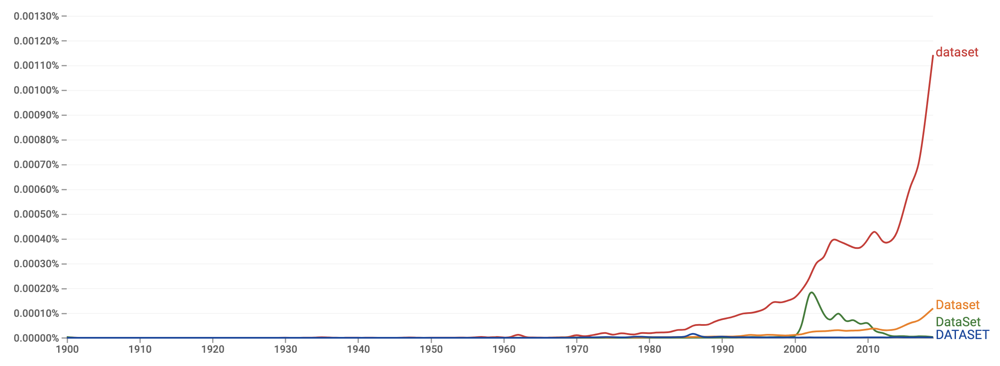

In this chapter, I aim to answer several questions about testing, training, and validation datasets:
First of all, what are datasets? According to the Cambridge Advanced Learner's Dictionary (4th Edition), a dataset is “a collection of separate sets of information that is treated as a single unit by a computer”. This somewhat defines the term “dataset” with general terms and can be used to describe any dataset. So, why do we need a dataset? If you take a look at Google Books’ Ngram Viewer of the word, you find that it only started being used widely in the past few decades.
Figure 6-1: A graph showing the usage of the word ‘dataset’ over time (1900-2019).
This shows that datasets have only become popular recently, probably due to renewed interest in empirical scientific research (research from observation and measurements) and the development of new fields like data and computer science. With this, we can conclude that datasets are created for scientific research, and often consist of similar data grouped in such a way to show correlations or patterns.
Training neural networks require data. This means we need to find a collection of examples to give to our network in order to achieve an approximation of the examples that we like. In order to see how well our network performs, we need to provide another set of data that wasn’t used in the training process and run our network through the inputs and find its accuracy or error rate/loss. The dataset used for training is called the training dataset, and the one used to evaluate a network’s performance is called the testing dataset. Note these definitions and purposes of the dataset types above are important when in consideration of what validation datasets are.
An important question comes up after a network is trained and a testing dataset is used to evaluate its performance is: what if I’m not satisfied with my network prediction accuracy on the testing dataset? Your first reaction should be to adjust various hyperparameters of the network like the learning rate, epoch number, or network structure (consisting of layer number, neuron number, activation function, and various other decisions like whether biases should be used), which should undoubtedly either improve or worsen your network accuracy. If this doesn’t work, then you should realize that neural networks probably aren’t the best solution for what you have in mind.
In the Overfitting and Underfitting chapter, I stated that biased networks are caused by a lack of data generalizing the use case, an improper shuffling of data, or just chance. Apart from this, networks can actually be biased because of the operator’s choices. This means, choices like hyperparameter tuning, dataset source, etc. directly affect whether a network becomes biased, overfitted, or underfitted. Why? In the previous paragraph, the decision to adjust hyperparameters in order to improve network accuracy leads to an unavoidable problem: the network is being fitted for the testing dataset, meaning it might have a bias on the testing dataset. This is because the operator of the network evaluates the network’s performance on the testing dataset, which means that the aim of hyperparameter adjustment isn’t just to improve training dataset accuracy, but ultimately the testing dataset accuracy. This means that the operator is hoping for a higher testing accuracy, which is why the operator is making adjustments to the network parameters that may bias towards the testing dataset. This undoubtedly isn’t intended, and will most definitely affect the real-world performance of the neural network, which is why network operators invented something to fix this issue: validation datasets. Validation datasets are another separate dataset that is used also to evaluate the network’s performance. But instead of evaluating the performance of the network after every iteration of hyperparameter adjustment, evaluate it at the last minute, meaning you should use the validation dataset to evaluate the performance of the network just before the network is exported or ported off for use in applications. If the testing accuracy is a lot higher than the validation accuracy (accuracy of the network on the validation dataset), the network is definitely becoming biased to the testing dataset. This way of splitting an entire dataset also has other benefits, e.g., you can better detect overfitting because you have a second “layer” of testing before the network is deployed for use in the real world. Below, I provide a comparison between the three types of datasets or sub-datasets:
| Training Sub-Dataset | Testing Sub-Dataset | Validation Sub-Dataset |
|---|---|---|
| Usually a substantial portion of the entire dataset. | Both training and validation sub-datasets are usually around the same size and each covers roughly 10-30% of the entire dataset. | |
| Used to train the neural network by the adjustment of weights and biases through a learning process. | Used to evaluate a network’s performance after every iteration of hyperparameter adjustment. | Used to evaluate the network’s performance just before deployment. |
| Necessary/compulsory in order to train a neural network. | Optional, but usually preferred because it can prevent overfitting and underfitting as well as make sure the network isn’t biased and performs as expected in the real world. | |
| Randomized. | Not randomized (there is no need). | |
Figure 6-2: A comparison of testing, training, and validation datasets.
Note that I wrote “[validation datasets are] optional but usually preferred because it can prevent overfitting and underfitting as well as make sure the network isn’t biased and performs as expected in the real world”. This means, that it is up to the operator to choose whether to use validation datasets, so when should you not use a validation dataset? You shouldn’t use a validation dataset when your dataset is small. This is because it limits the number of training and/or testing samples that can be used when training your model. Since networks learn better when given more examples that generalize the use case, this inevitably will reduce the network’s training accuracy, so operators of networks tend to opt-out of creating a validation dataset when data is limited.
So how should a single dataset be separated into these three separate sub-datasets? Is there any optimal way of splitting the data? Usually, the best way to split a dataset into the three datasets is to spread examples evenly into each dataset with an equal (or relatively close) amount of each type of example in each dataset. For example, putting 1000 images of different 0-9 digits into each of the three datasets (training, testing, and validation). If your use case isn’t classification, but regression, you should find a wide range of inputs that cover most of the regressing problem you want to solve, and pick various points in between these training samples to be your testing and validation samples. This ensures your network has a somewhat whole viewpoint/outlook on the function being approximated so the network will be able to predict outputs for new input values.
That’s just about it, head on to the next chapter!
| Training Sub-Dataset | Testing Sub-Dataset | Validation Sub-Dataset |
|---|---|---|
| Usually a substantial portion of the entire dataset. | Both training and validation sub-datasets are usually around the same size and each covers roughly 10-30% of the entire dataset. | |
| Used to train the neural network by the adjustment of weights and biases through a learning process. | Used to evaluate a network’s performance after every iteration of hyperparameter adjustment. | Used to evaluate the network’s performance just before deployment. |
| Necessary/compulsory in order to train a neural network. | Optional, but usually preferred because it can prevent overfitting and underfitting as well as make sure the network isn’t biased and performs as expected in the real world. | |
| Randomized. | Not randomized (there is no need). | |